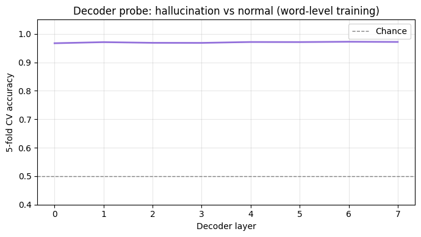
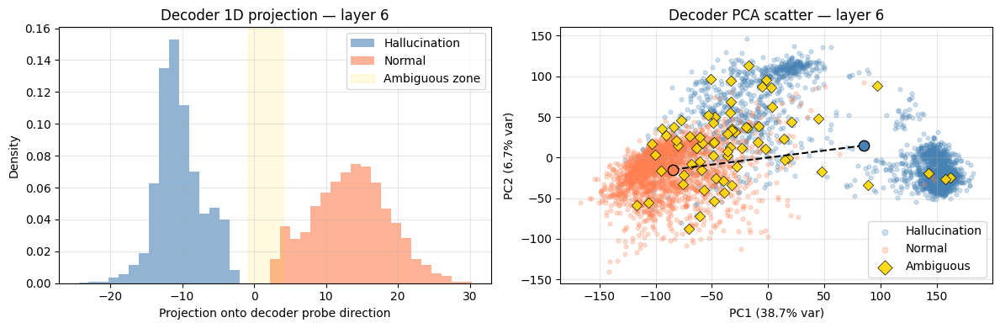

AED Hallucinations - The Decoder Knows Too
In the previous articles, we established two things: the encoder of our AED model builds a near-perfect linear representation of speech vs non-speech from the very first transformer layer, and - crucially - this representation is causally upstream of the decoder. Steering encoder activations along the probe direction suppresses approximately 50% of hallucinations on non-speech audio, without measurably degrading transcription of real speech. Case A is confirmed: the model knows it is looking at non-speech; it simply fails to act on that knowledge.
This raises a natural follow-on question. When the decoder generates a hallucinated transcript - token by token, producing “Oh,” or “Thank you.” from ambient noise - does it build an internal representation of what it is doing? Does it, at the point of generation, “know” that it is hallucinating?
This is a distinct question from the encoder probe. The encoder is processing audio; we are asking whether the acoustic features it builds distinguish the two classes. Here, we are asking about the decoder’s state during generation - whether the hidden representations it constructs while producing output differ between hallucination and real transcription. The answer would tell us whether the failure to suppress hallucinations is isolated to the encoder-decoder interface, or whether it runs all the way through to the output stage.
Method
The method is identical in structure to the encoder probe, applied to the decoder layers. We register forward hooks on each decoder transformer layer during beam search. At each generation step, the new token’s hidden state is captured - with key-value caching enabled, each step processes exactly one new token, so the hook fires once per step and records a (hidden_dim,) vector. These are mean-pooled over the generated sequence to give one vector per example per layer.
The two classes are:
- Hallucination (
y = 0): non-speech audio where the model produced non-empty output - Normal (
y = 1): speech audio where the model produced a transcript
A logistic regression is trained per decoder layer, and 5-fold cross-validation gives unbiased accuracy estimates.
One subtlety: for non-speech audio, many segments produce no output at all - silence segments that the model correctly transcribes as silent. These contribute nothing to the hallucination class, since there is no decoder activation to probe. The collection therefore only retains examples where the model actually generated output, ensuring we are probing the decoder’s state during active hallucination rather than measuring the (trivially separable) difference between “generated something” and “generated nothing”.
Held-out evaluation
The collection loop tracks how many entries were scanned before the training set was filled. All entries beyond that scan boundary are held out and form a clean test set, guaranteed to have never been processed during training. This avoids any risk of leakage from examples that were scanned but discarded (e.g. non-hallucinating non-speech segments). The eval loop runs on this fully disjoint slice.
Results
The decoder also separates
One important difference from the encoder probe is the choice of training data. The encoder probe used pure silence segments - acoustically unambiguous non-speech - against dense, fluent speech. The decoder probe here uses a harder, more realistic setting: the non-speech class consists of sparse speech segments - real audio containing speech interrupted by long pauses, background noise, and extended non-speech passages. These are exactly the segments most likely to cause hallucinations in production, and they represent the worst case for linear separability. The goal is to establish whether the separation holds even when the acoustic boundary between speech and non-speech is genuinely ambiguous.
The curve is essentially flat at above 0.96 across all decoder layers, peaking at 0.972 at layer 6. Like the encoder, the distinction is present from the very first layer and does not materially change with depth — the signal is immediately accessible and remains so throughout the full decoder stack.

The 1D projection at the best layer shows essentially complete separation, with a gap of 5.46 pooled standard deviations between the two class centres.

Held-out evaluation: 98% recall, 95% precision
The fitted probe is evaluated on the held-out test set as a runtime hallucination detector: run the model, collect decoder activations, classify without looking at the transcript output.
| Correct | Errors | Rate | |
|---|---|---|---|
| Non-speech hallucinations | 482 detected | 12 missed | recall 0.98 |
| Speech transcriptions | 871 passed | 23 false positives | precision 0.95 |
Of 494 hallucinating segments in the test set, 482 are correctly identified. Of 894 normal speech segments, 871 are correctly cleared. 35 cases in total appear as errors. The correctly detected hallucinations are characteristic of the failure mode: short, affirmative-sounding fragments produced from ambient silence - “Oh,”, “Hold on.”, “Thank you.”, “I’m gonna go with it.”, “Jesus.” - consistent with what was observed in the encoder steering experiments.
The errors
The 12 false negatives are non-speech segments that contain audible speech, where the model produces a coherent-sounding transcript and the probe correctly classifies it as normal transcription — the label is inconsistent with the audio content. The hallucinated token fractions are correspondingly low (0.00–0.56), in contrast to genuine hallucinations where the prefix and, most frequently, all tokens are classified as hallucinations.
| Model output | Hallucinated token fraction | |
|---|---|---|
| I just… | 0.50 | |
| Right here. | 0.50 | |
| about it. | 0.25 | |
| I don’t know why I always just. | 0.27 | |
| Well, and, um… | 0.29 | |
| Any | 0.50 | |
| And Janet, what the… | 0.56 | |
| Oh. | 0.33 | |
| We are taking. | 0.40 | |
| That’s what you get. | 0.25 | |
| Uh, | 0.00 | |
| Thank you. | 0.50 |
The 23 false positives fall into two groups. The first consists of short, hallucination-typical phrases on segments where the audio may contain no intelligible speech — in which case the probe’s classification is arguably correct and the label is wrong:
| Model output | Hallucinated token fraction | |
|---|---|---|
| Thank you. | 0.75 | |
| Thank you. | 0.75 | |
| Yeah. | 0.67 |
The second group are genuine probe errors, where real speech is present but in a form the probe has not encountered during training — synthetic or effects-processed game voices, song lyrics in background music, speech with heavy ambient noise or reverberation. All examples can be played back inline:
| Model output | Hallucinated token fraction | |
|---|---|---|
| Dance dance to the baby | 1.00 | |
| I’m not gonna do it! | 1.00 | |
| Jump! | 1.00 | |
| Get him up! | 1.00 | |
| WHAT THEY ARE?! | 0.92 | |
| Your top tower is under attack. | 0.89 | |
| Take a picture of that. | 0.86 | |
| Get on the truck, let’s go! F**ing normies! Eat this!* | 0.77 | |
| We’ll be right back. | 0.75 | |
| I hit one of them, 40 white. His dude died on air by the other team. | 0.71 | |
| Come on | 0.67 | |
| So here he is, you can see the… | 0.64 | |
| Nope, I have not. | 0.62 | |
| And then it’s flying fire. | 0.60 | |
| Quick hands. | 0.60 | |
| I’m gonna go see | 0.57 | |
| Aw, stop it. If you guys like this video and you guys want to watch me try more fun Halloween hacks, I have a whole playlist. | 0.57 | |
| Sometimes you say, you hear it? | 0.56 | |
| That feels like a tight fit. | 0.50 | |
| So | 0.50 |
There is a rough correspondence between the hallucinated token fraction and the intelligibility of the underlying audio: segments at the top of the table — non-legible crowd noises, heavily processed voices, shouted exclamations — are acoustically distant from conversational speech, and the probe’s confidence is accordingly high. Those at the bottom are altered or unusual in some way but remain clearly recognisable as speech, and the probe fires with correspondingly less certainty. It is worth noting that the probe was trained on only 3,000 examples per class, with no deliberate coverage of these corner cases. Performance on acoustically unusual speech — processed voices, background vocals, heavily reverberant or noise-overlapped audio — would likely improve with broader training data that includes such examples. The hallucination token fractions are higher for the energetic, exclamatory utterances at the top, which are acoustically the closest to hallucination-typical output. One observation from the token-level breakdown that is worth noting: in the first-group cases — short, stock phrases on borderline audio — both the prefix and a majority of the individual tokens tend to be classified as hallucinations. A classifier that requires the prefix to be hallucinated and a threshold fraction of the content tokens to be hallucinated would likely reduce false positives on legitimate speech while retaining sensitivity to genuine hallucinations. This was not pursued here, as the goal was to understand the mechanism rather than to optimise a detection method.
Where the signal lives: cross-attention, not generation
Evaluating the probe per individual token - rather than on the mean-pooled sequence - reveals something unexpected. For a subset of cases, every individual generated token is classified as normal by the probe, yet the overall mean-pooled activation is classified as a hallucination. Since the probe is a linear classifier, this can only happen if the mean is being pulled across the decision boundary by an activation not included in the per-token breakdown.
The culprit is the prefix activation: the decoder’s hidden state captured when it processes the initial [BOS, LANG] tokens before generating anything. This is the moment of the decoder’s first cross-attention over the encoder output - before a single transcript token exists. It is excluded from the per-token breakdown, but included in the mean.
A concrete example. A speech segment produces the output “And,” and the overall probe fires (false positive). The per-token breakdown looks like this:
| Position | Token | Probe classification |
|---|---|---|
| 0 | [prefix] |
hallucination |
| 1 | And | normal |
| 2 | , | normal |
The prefix is the only hallucination-classified position. Everything the decoder generated looks normal; only its initial state - set before generation begins, purely through cross-attention to the encoder - looks like a hallucination.
This tells us something about the nature of the undelrying mechanism here. The prefix activation is the decoder’s first and only opportunity to read the encoder output without any autoregressive context. Its state at that point is entirely determined by what the encoder produced - which is itself a near-perfect linear representation of speech vs non-speech. For non-speech audio, the encoder output sits deep in the non-speech cluster; the decoder’s initial cross-attention read of that output puts it in the hallucination region before any token is generated. For speech audio, the encoder output sits in the speech cluster; the initial cross-attention puts the decoder in the normal zone, and it stays there.
The implication is that the halucination signal in the decoder is encoded primarily in the initial cross-attention state, not in the autoregressive generation. The decoder does not become progressively more “aware” that it is hallucinating as it generates tokens - it knows from the very first step, before producing a single word, because it has already read the encoder’s non-speech representation. The tokens that follow are then generated from a starting point that already carries the hallucination signal in its mean-pooled representation. The cross-attention is the mechanism and everything else is downstream.
Ablation: ruling out sequence-length confounds
Two potential confounds are worth addressing. The first is transcript length: hallucinated transcripts are short (typically one to three words) while normal transcripts are long. The second is audio duration: silence segments used for the hallucination class may be systematically shorter than the speech segments, meaning the decoder’s cross-attention attends over a shorter encoder sequence - and the probe might be learning this length difference rather than anything about acoustic content.
Two ablations are run:
- Transcript position: the probe is retrained using only the first word of each segment. At position 0, both classes are in the same place in the sequence; any remaining separation must come from cross-attention content.
- Audio duration: the probe is retrained using only segments whose natural duration falls within the overlap window between the two classes. Segments are used whole - not trimmed - to avoid the risk of cutting a speech segment down to a silent passage.
| Full probe | First-word | Duration-matched | |
|---|---|---|---|
| First layer | 0.942 | 0.927 | 0.894 |
| Last layer | 0.973 | 0.972 | 0.969 |
The first-word probe barely moves - consistent with the positional confound being structurally implausible in any case, since the primary signal carrier is the prefix activation, computed before any token exists. Duration matching causes a ~5 percentage point drop in the first layer, suggesting the earliest decoder layer is somewhat sensitive to encoder sequence length; by the final layer the gap has closed to under half a point as deeper cross-attention integration takes over. Both ablations confirm that the separation is primarily grounded in acoustic content.
Interpretation
The decoder builds its own independent representation distinguishing hallucination from normal transcription, to essentially the same accuracy as the encoder probe. The model does not merely process non-speech audio differently in the encoder - it also generates tokens differently when hallucinating. Its internal state during hallucination generation is linearly distinguishable from its state during real transcription, consistently, across all eight decoder layers, with no learning beyond a logistic regression.
This means the model has redundant, multilayerd knowledge that it is hallucinating. We show that the encoder has it from layer 0 and that the decoder builds it from generation step 1, but neither representation surfaces in the output.
The suppression achieved by encoder-level steering works not because it introduces new information into the system, but because it amplifies a signal the model already possesses. The decoder probe shows the complementary side of this: the decoder would, if it had a way to act on its own internal state, be capable of flagging its output as hallucinated.
The information required to suppress hallucinations is present in the model twice over - once at the input stage, once at the output stage. What is absent is not a training signal - non-speech and sparse-speech data were included in training, and the model does produce silence in the typical case. What is absent is a training objective that explicitly rewards the model for routing through the latent representation the probe identifies. The coupling between its internal knowledge that it is hallucinating and the decision to output EOS is loose enough to fail at the margin.
A secondary finding worth noting: the decoder probe is precise enough to function as an approximate label auditor. Applied to a labelled dataset, it surfaces samples where the label and the audio content disagree. This is not its intended use, but it suggests that interpretability tools applied at the output-generation stage can detect annotation noise that are otherwise challenging to identify.